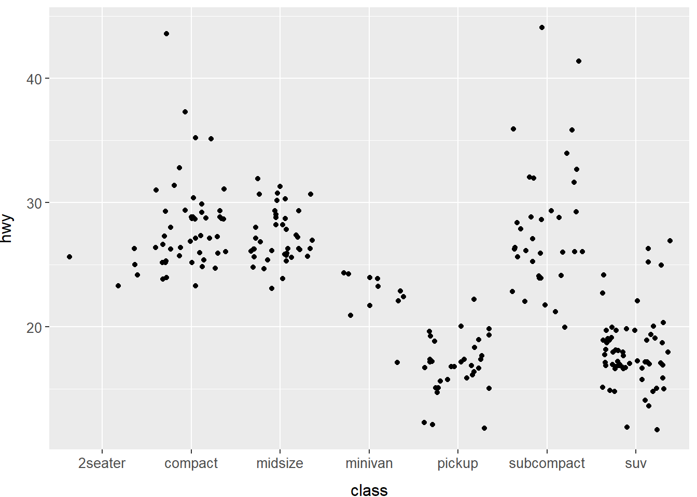
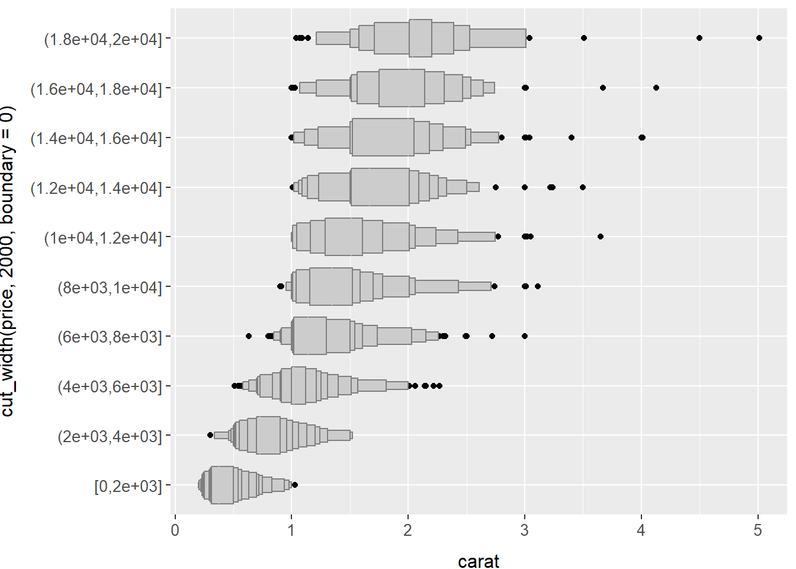

Capítulo 5 Análise exploratória de dados
5.3 Variação
Exercício 5.3.1
Explore a distribuição de cada variável x, y e z em diamonds. O que você aprende? Pense em um diamante e como você pode determinar qual dimensão é o comprimento, a largura e a profundidade.
Solução. Por se tratar de variáveis continuas, vamos utilizar um gráfico de densidade (ou histograma) para visualizar os dados.
Como x e y possuem distribuição mais parecisa, acredita-se que tratam-se do comprimento e da largura do diamante, sendo z a profundidade (por ter média menor).
plot <- diamonds %>%
ggplot() +
coord_cartesian(
xlim = c(0, 10),
ylim = c(0, .85)
) +
scale_x_continuous(breaks = seq(0, 10, by = 1)) +
labs(
y = ""
) +
tema
x <- plot + geom_density(aes(x))
y <- plot + geom_density(aes(y))
z <- plot + geom_density(aes(z))
grid.arrange(x, y, z, nrow = 3)diamonds %>%
# Remover os outliers
filter(0 < x, x <= 10, 0 < y, y <= 10) %>%
ggplot(aes(x, y)) +
# Mostrar a densidade de x e y em conjunto
geom_density2d() +
# Mostrar uma linha guia para visualizar se x e Y crescem de forma
# proprocional, isto é, se os diamantes são quadrados/redondos
geom_abline(
aes(intercept = 0, slope = 1),
linetype = "dashed"
) +
# Arrumar a proporção do gráfico
coord_cartesian(
xlim = c(3.5, 8.5),
ylim = c(3.5, 8.5)
) +
# Aplicar o tema padrão
temaExercício 5.3.2
Explore a distribuição de price. Você identifica algo incomun ou surpreendente? (Dica: pense cuidadosamente sobre binwidth e certifique-se de experimentar uma ampla gama de valores).
Solução.
## carat cut color clarity depth
## Min. :0.2000 Fair : 1610 D: 6775 SI1 :13065 Min. :43.00
## 1st Qu.:0.4000 Good : 4906 E: 9797 VS2 :12258 1st Qu.:61.00
## Median :0.7000 Very Good:12082 F: 9542 SI2 : 9194 Median :61.80
## Mean :0.7979 Premium :13791 G:11292 VS1 : 8171 Mean :61.75
## 3rd Qu.:1.0400 Ideal :21551 H: 8304 VVS2 : 5066 3rd Qu.:62.50
## Max. :5.0100 I: 5422 VVS1 : 3655 Max. :79.00
## J: 2808 (Other): 2531
## table price x y
## Min. :43.00 Min. : 326 Min. : 0.000 Min. : 0.000
## 1st Qu.:56.00 1st Qu.: 950 1st Qu.: 4.710 1st Qu.: 4.720
## Median :57.00 Median : 2401 Median : 5.700 Median : 5.710
## Mean :57.46 Mean : 3933 Mean : 5.731 Mean : 5.735
## 3rd Qu.:59.00 3rd Qu.: 5324 3rd Qu.: 6.540 3rd Qu.: 6.540
## Max. :95.00 Max. :18823 Max. :10.740 Max. :58.900
##
## z
## Min. : 0.000
## 1st Qu.: 2.910
## Median : 3.530
## Mean : 3.539
## 3rd Qu.: 4.040
## Max. :31.800
## Exercício 5.3.3
Quantos diamantes têm 0,99 quilates? Quantos têm 1 quilate? Qual você acha que é a causa dessa diferença?
Solução. Existem 23 diamantes com 0.99 quilates, contra 1558 diamantes com 1 quilate. Provavelmente a concentração de diamantes de 1 quilate se deve a arredondamento.
## # A tibble: 2 × 2
## carat n
## <dbl> <int>
## 1 0.99 23
## 2 1 1558Exercício 5.3.4
Compare e contraste coord_cartesian versus xlim() ou ylim() ao dar zoom em um histograma. O que acontece se você não configurar binwidth? O que acontece se você tentar dar zoom para que apenas meia barra seja mostrada?
Solução. Ao utilizar coord_cartesian() a restrição nos eixos x e y ocorrem após calculados os valores do gráfico e desenhados os geoms, dessa forma, o cálculo não é afetado pelos limites, apenas é feito o zoom. Já para xlim e ylim, os filtros são aplicados antes da construção do gráfico e as restrições são levadas em consideração, dessa forma, temos pontos que serão realmente descartados, e o leiaute do gráfico acaba ficando bem diferente.
## `stat_bin()` using `bins = 30`. Pick better value with `binwidth`.## Warning: Removed 17502 rows containing non-finite values (`stat_bin()`).## Warning: Removed 2 rows containing missing values (`geom_bar()`).## `stat_bin()` using `bins = 30`. Pick better value with `binwidth`.5.4 Valores faltantes
Exercício 5.4.1
O que acontece com valores faltantes em um histograma? O que ocorre com valores faltantes em um gráfico de barras? Por que há uma diferença?
Solução. A construção de um histograma considera valores continuos, dessa forma os valores faltantes são descartados, uma vez que não é possível dispor valores faltantes na ordenação dos valores (NA > 0 não resulta em um valor lógico). Já para o gráfico de barras, como são considerados valores categóricos, os valores faltantes são exibidos como uma nova categoria.
diamonds2 <- diamonds %>%
mutate(y = ifelse(y < 3 | y > 20, NA, y))
diamonds2 %>%
ggplot(aes(x = y)) +
geom_histogram() +
tema## `stat_bin()` using `bins = 30`. Pick better value with `binwidth`.## Warning: Removed 9 rows containing non-finite values (`stat_bin()`).5.5 Covariação
Exercício 5.5.1
Use o que você aprendeu para melhorar a visualização dos tempos de decolagem dos coos cancelados versus não cancelados.
Exercício 5.5.2
Qual variável no conjunto de dados dos diamantes é mais importante para prever o preço de um diamante? Como essa variável está correlacionada ao corte (cut)? Por que a combinação desses dois relacionamentos leva a diamantes de menor qualidade serem mais caros?
Solução. Vamos considerar na análise as seguintes variáveis: carat, cut, color e clarity.
Para ãvaliar a correlação entre carat e price (duas variáveis contínuas), podemos usar geom_point(), geom_boxplot() com a variável independente discretizada ou geom_quantile(). Vamos avaliar o melhor dos cenários:
Com base nas imagens acima, podemos ver que existe uma relação positiva entre carat e price, o que indica que possivelmente essas duas variáveis estão bem correlacionadas. Note ainda que a representação via boxplot ficou um pouco melhor do que a representação por pontos.
Vamos agora avaliar a variável cut. Por se tratar de uma variável discreta, podemos utilizar geom_col(), geom_boxplot(), geom_dotplot() ou geom_violin(). Vamos avaliar cada um deles.
## Bin width defaults to 1/30 of the range of the data. Pick better value with
## `binwidth`.Notamos que os gráficos gerados por geom_col() e geom_dotplot() não geraram nenhum resultado interessante. Este devido à poluição visual e aquele devido a mostrar uma contagem dos elementos em cada grupo, e não a associação entre as variáveis.
Tanto com geom_boxplot(), quanto com geom_violin(), podemos perceber que há uma correlação negativa muito fraca entre as variáveis e, desta forma, podemos considerar que cut não é interessante para predizer os preços dos diamantes.
Sigamos para a variável color:
Como podemos perceber, a relação entre as variáveis não é significativa, portanto, descartaremos color.
Seguindo em frente, precisamos avaliar a variável clarity:

Notamos também que a variável não tem correação com o preço.
Concluímos, portanto, que a melhor variável para predizer o preço do diamante é carat.
Agora, avaliaremos a relação entre carat e cut.
Há uma relação negativa muito leve entre cut e carat, mas isso não é suficiente para dizer que uma impacta na outra. Há grande variabilidade de carat dentro de cada tipo de corte (cut) e, nota-se, os diamantes de grande quilate (provavelmente pedras grandes), tem um corte apenas justo. Isso pode se dar ao fato de que, quanto menor o diamante, melhor precisa ser o corte para que se consiga um bom valor. Além disso, é presumível que é mais fácil vender um diamante pequeno do que um grande, por isso talvez o preço não seja tão alto.
Exercício 5.5.3
Instale o pacote ggstance e crie um boxplot horizontal. Como isso se compara a usar coord_flip()?
Solução.
##
## Attaching package: 'ggstance'## The following objects are masked from 'package:ggplot2':
##
## geom_errorbarh, GeomErrorbarh## Warning: The following aesthetics were dropped during statistical transformation: x
## ℹ This can happen when ggplot fails to infer the correct grouping structure in
## the data.
## ℹ Did you forget to specify a `group` aesthetic or to convert a numerical
## variable into a factor?## Warning: Using the `size` aesthetic with geom_segment was deprecated in ggplot2 3.4.0.
## ℹ Please use the `linewidth` aesthetic instead.
## This warning is displayed once every 8 hours.
## Call `lifecycle::last_lifecycle_warnings()` to see where this warning was
## generated.## Warning: Using the `size` aesthetic with geom_polygon was deprecated in ggplot2 3.4.0.
## ℹ Please use the `linewidth` aesthetic instead.
## This warning is displayed once every 8 hours.
## Call `lifecycle::last_lifecycle_warnings()` to see where this warning was
## generated.A diferença está apenas no mapeamento.
Exercício 5.5.4
Um problema com boxplots é que eles foram desenvolvidos em uma era de conjuntos de dados muito menores e tendem a exibir um número proibitivamente grande de “valores fora da curva”. Uma abordagem para remediar esse problema é o letter value plot . Instale o lvplot e tente usar geom_lv() para exibir a distribuição de preço versus corte. O que você aprendeu? Como você interpreta os gráficos?
Exercício 5.5.5
Compare e contraste geom_violin() com geom_histogram() facetado, ou um geom_freqpoly() colorido. Quais são os prós e contras de cada método?
Solução. Com o polígono de frequência é mais fácil comparar os grupos, uma vez que as linhas são sobrepostas, contudo muitas vezes pode se tornar complicado visualizar o comportamento/variação de cada grupo individualmente. O violino e o histograma permitem visualizar a distribuição em cada grupo, contudo fica mais complicado fazer a comparação.
# Histogram
diamonds %>%
ggplot(aes(price)) +
geom_histogram() +
facet_wrap(~ cut, ncol = 1, scale = "free_y") +
tema## `stat_bin()` using `bins = 30`. Pick better value with `binwidth`.#Frequency Polygon
diamonds %>%
ggplot(aes(price, ..density.., color = cut)) +
geom_freqpoly(binwidth = 500) +
tema## Warning: The dot-dot notation (`..density..`) was deprecated in ggplot2 3.4.0.
## ℹ Please use `after_stat(density)` instead.
## This warning is displayed once every 8 hours.
## Call `lifecycle::last_lifecycle_warnings()` to see where this warning was
## generated.Exercício 5.5.6
Se você tem um conjunto de dados pequeno, às vezes é útil usar geom_jitter() para ver a relação entre uma variável contínua e uma categórica. O pacote ggbeeswarm fornece alguns métodos similares a geom_jitter(). Liste-os e descreva brevemente o que cada um faz.
Solução. O pacote oferece duas geoms. A primeira, geom_quasirandom() mistura o jitter com a a aparencia do gráfico violino. A segunda, geom_beeswarm() produz gráficos parecidos com violinos, mas com alguma sobreposição.
Em comparação ao geom_jitter(), o pacote ggbeeswarm() permite uma melhor visualização dos clusteres, caso existam. No nosso exemplo, os clusters seriam as próprias classes, ele evita que os pontos de uma classe se aproximem demais da classe ao lado, gerando uma melhor visualização. Também mantém mais ou menos agrupados as “alturas” no eixo y, isto é, o erro é colocado apenas em uma das direções.

Exercício 5.5.7
Como você alteraria a escala do conjunto de dados diamonds para mostrar mais claramente a distribuição de corte dentro de cor ou cor dentro de corte?
Exercício 5.5.8
Use geom_tile() junto de dplyr para explorar como os atrasos médios dos voos variam por destino e mês. O que dificulta a leitura do gráfico? Como você poderia melhorá-lo?
Solução. ???
flights %>%
group_by(month, dest) %>% # Agrupar por mês e destino
summarise(
dep_delay = mean(dep_delay, na.rm = TRUE) # Calcular o atraso médio
) %>%
group_by(dest) %>% # Agrupar pelo destino
filter(n() == 12) %>% # Selecionar apenas aqueles destinos que tem informação de todos os meses
ungroup() %>% # Desagrupa pelo destino
ggplot(aes(factor(month), dest, fill = dep_delay)) +
geom_tile()## `summarise()` has grouped output by 'month'. You can override using the
## `.groups` argument.Exercício 5.5.9
Por que é um pouco melhor usar aes(x = color, y = cut) em vez de aes(c = cut, y = color) no exemplo anterior?

Exercício 5.5.10
Em vez de resumir a distribuição condicional com um boxplot, pode-se usar um polígono de frequência. O que você precisa considerar ao usar cut_width() versus cut_number()? Como isso impacta uma visualização da distribuição 2D de carat e price?
Solução. Utilizamos cut_width() quando queremos determinar o tamanho das classes que serão exibidas e cut_number() quando queremos determinar o número de classes.
Se o número total de classes for muito grande, a visualização fica comprometida. Se for pequeno demais, não captaremos comportamentos importantes.
## `stat_bin()` using `bins = 30`. Pick better value with `binwidth`.## `stat_bin()` using `bins = 30`. Pick better value with `binwidth`.Exercício 5.5.11
Visualize a distribuição de carat, particionada por price.
Solução. Inicialmente vamos utilizar boxplot para visualizar a distribuição. Vamos dividir os preços em 10 grupos.
Note que, cut_number() dividiu os grupos de modo a ter a mesma quantidade de registros em cada classe e isso acaba gerando classes de larguras diferentes. É mais fácil comparar classes de mesma largura, por isso vamos refazer a visualização utilizando cut_width():
A visualização ficou um pouco melhor, porém temos uma classe que inclui valores negativos. Vamos corrigir isso utilizando o argumento boundary:
diamonds %>%
ggplot(aes(cut_width(price, 2000, boundary = 0), carat)) +
geom_boxplot() +
coord_flip() +
temaComo existem muitos outliers, vamos tentar utilizar o letter value:
diamonds %>%
ggplot(aes(cut_width(price, 2000, boundary = 0), carat)) +
geom_lv() +
coord_flip() +
tema
Para melhorar a visualização das classes, vamos também mudar a unidade de price de dolares para milhares de dólares, basta dividirmos os valores por 1000:
diamonds %>%
mutate (price = price / 1000) %>%
ggplot(aes(cut_width(price, 2, boundary = 0), carat)) +
geom_lv() +
coord_flip() +
temaAgora vamos melhorar os títulos do gráfico:
diamonds %>%
mutate (price = price / 1000) %>%
ggplot(aes(cut_width(price, 2, boundary = 0), carat)) +
geom_lv() +
coord_flip() +
labs(
title = "Distribuição do quilate das pedras por faixa de preço",
y = "Quilates",
x = "Preço (mil dólares)"
) +
temaO gráfico está pronto.
Note que poderíamos ter utilizado a geom_violin(), porém, neste caso, não teríamos uma visão muito boa dos outliers.
Exercício 5.5.12
Como a distribuição de preços de diamantes muito grandes se compara à de diamantes pequenos? É como você esperava ou isso lhe surpreende?
Exercício 5.5.13
Combine duas técnicas que você aprendeu para visualizar a distribuição combinada de cut, carat e price.
Exercício 5.5.14
Gráficos bidimensionais revelam pontos fora da curva que não são visíveis em gráficos unidimensionais. Por exemplo, alguns pontos no gráfico a seguir tem uma combinação incomum de valores de x e y, que faz pontos ficarem fora da curva, mesmo embora seus valores x e y pareçam normais quando examidanos separadamente.
ggplot(data = diamonds) +
geom_point(mapping = aes(x = x, y = y)) +
coord_cartesian(xlim = c(4, 11), ylim = c(4, 11)) +
temaPor que um diagrama de dispersão é uma exibição melhor do que um diagrama de caixa neste caso?
Solução. Como os valores de x e y são fortemente relacionados, os outliers não vão aparecer no extremo de ums ou outra coordenada, mas em proporções desigaia dos diamantes.